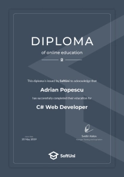
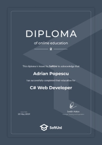

Web Development Certificates
Acquired certificates and a diploma from the training at SoftUni (Software University) prove the knowledge and skills you have acquired and must be presented to employers.
Certificate - certificate for a course at SoftUni (Software University) is issued after a successfully passed examination with a mark of B or higher.
Diploma - students of SoftUni (Software University) receive a full diploma for a profession after collecting the required number of credits (C# and Java Web Developer - 130 credits, Python and JavaScript Web Developer - 100 credits).
The diploma awarded by SoftUni is not state recognized but is recognized by the employers.
 

Diploma
Web Developers master the programming and practical development of web-based Java software and the Java EE platform. They have strong knowledge of both back-end technologies, databases, web services and cloud applications, as well as front-end programming with JavaScript, AJAX, and Single Page Apps.
At SoftUni, Java Web Developers gain solid practical programming skills (logical thinking and problem-solving skills, data structures and algorithms, object-oriented and functional programming, quality program code) and specialize in the development of applications through modern Web technologies, tools and technology frameworks from the Java/JavaEE ecosystem: HTML, CSS, JavaScript, jQuery, Bootstrap, AJAX, SPA, Java, Eclipse, IntelliJ IDEA, OOP, Databases, SQL, Oracle, JPA/Hibernate, Spring Framework, REST services, JAX-RS, cloud technologies, Servlets/JSP, Spring MVC и Java EE as well as working with Git, GitHub and teamwork collaboration and development tools.
To acquire a complete software engineering diploma or certificate from individual courses, you can apply for admission to SoftUni programming program.
Explore our Software Engineering Program
Start with a free Programming Basics training, begin your career in the IT sector and graduate as a full stack developer!